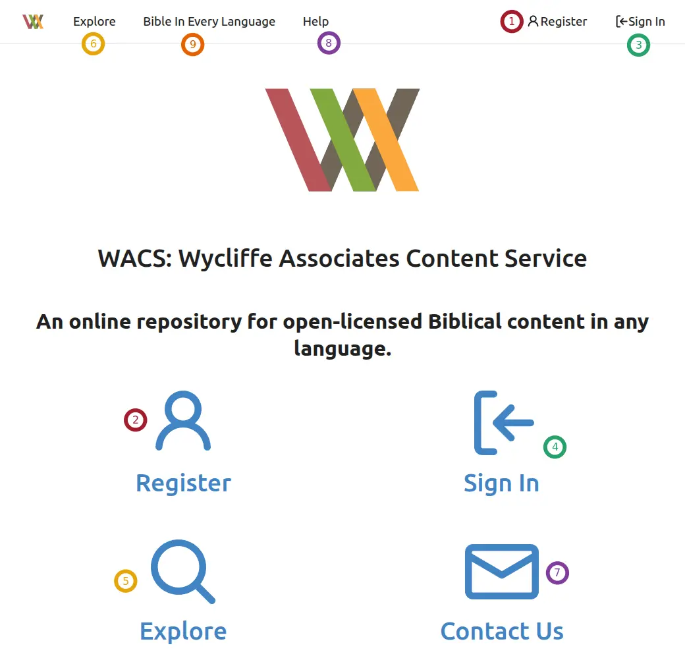

PORT ↔ BIEL ↔ WACS
There are three websites or Internet services used with our translation tools. The acronyms, or short forms, of these sites are PORT, BIEL, and WACS.
PORT
PORT is an online database used by Translation Services to keep track of translation projects. PORT automatically reads uploads to WACS and checks them for completion status.
Accounts on PORT are created by account managers in WA. There is no way to create your own account.
It is not something used by most technicians. When a translation project is created in PORT, it is assigned a language code, and the manager is able to track progress on the project.
BIEL
Bible In Every Language (BIEL) is a website where uploaded Bible translations can be read, or downloaded to read or print offline. You can even download an app version of a project to read on your smart phone.
No account is needed or available for BIEL.
Not all projects on WACS show on BIEL. The manager determines which ones show by making settings changes in PORT.
Lab: 1 PORT and BIEL
Should you have an account for PORT?
If you need an account for PORT, to whom should you speak?
Do you need an account for BIEL?
If you need an account for BIEL, to whom should you speak?
WACS
The Wycliffe Associates Content Server is where translation projects are sent for safe-keeping (and to appear on BIEL). Anyone can open an account on WACS, but you do need to have a valid email address, and you will need to be able to check your email while you are creating an account on WACS.
If you create a WACS account, or help a Translator to create a WACS account, send an email to Todd Brain (todd_brain@wycliffeassociates.org) and tell him: - Name of the User - Email address of the User - WACS Username - Languages and Repos they will be uploading, or Project Manager / Regional Director to whom they report.
Lab 2: WACS Lab 1
Whom should you contact if you create a WACS account for yourself or a translator?
Why do we upload projects to WACS?
Can you have a WACS account if you don’t have an email address?
Who can have an account on WACS?
An account for WACS can be created by going to https://content.bibletranslationtools.org, or by clicking on Create a Server Account in BTT-Writer. This will use your Internet connection. It uses a small amount of data, and connects to bibletranslationtools.org. If it is dangerous for you to connect to a site that says bible, please use a VPN before performing this step.
Whether you click on the button in BTT-Writer, or go to the website, you will find yourself on the page shown above and to the right.
When you click Register, you will be taken to a page where you will need to choose a username and password.
Lab 3: WACS Lab 2
What can you do to protect yourself if you want to connect to WACS from a restricted country?
What do you do to create an account on WACS?
WACS Username and Password
The Username will be included with anything you upload to WACS, and also anything edited in BTT-Writer while you are logged in. If you need to hide your name, make sure to use a pseudonym1. A pseudonym is just a nick-name or fake name that will identify you to your team members, but not to people outside. You do need a valid email address, because you will receive an email to authorize creation of the account. Only one account can be created on WACS for each email address. The password must be a safe one: complex enough to be difficult to guess.
Password complexity:
6 characters
At least one uppercase character (A..Z)
At least one lowercase character (a..z)
At least one digit (0..9)
At least one special character (!@#$%^&*)
If you forget your password, you can change it under the Sign In button (top left).
Lab 4: WACS Lab 3
When should a translator or technician use a pseudonym?
Can you create a WACS account if you don’t have email?
Can I use the same thing for my username and password?
How can I change my password if I forget it?
Using WACS
WACS is a very useful tool, and can answer many questions about a translation project.
On this screen are several controls, but most of them are duplicates.
① and ② are both for Registering an account on WACS.
③ and ④ are both used for Signing In once you have an account.
⑤ and ⑥ are both for Exploring the content on WACS.
⑦ and ⑧ are both for Getting Help from us with regard to WACS. (They take you to the Help Desk.)
⑨ takes you to Bible in Every Language.
Since we speak about register and sign in elsewhere, let’s talk about Explore.
Explore
When you Explore WACS, you don’t need to be signed in. Anyone in the world can do this.

You’ll notice that you can still click in the top bar to go to Bible in Every Language, the Help Desk, Register, or Sign In.
Below that are three tabs: Repositories, Users, and Organizations. By default, you start with Repositories selected.
Below, you’ll see a list of the most recent uploads to WACS, by any user. The first part of the name (before /) is the username of the person who uploaded. The second part (after /) is the name of the project. You can search for a repository (project) by clicking in the Search bar and typing part of the name of the repository. In the case of the first one in the image, we could search for wyy_, which would find uploaded projects that match the language code wyy. We could type _act_ to search for uploaded projects of the Book of Acts. Searching for wyy_act would search for the Book of Acts in the language indicated by code wyy.
If you click on Users, you can search by username. This will let you find accounts that match that name, and then look at all of the uploads performed by that person.
Troubleshooting WACS
One problem people sometimes encounter is being told an upload can’t be found.
Where is my Upload?
When you upload from BTT-Writer, you will get a notification of success that looks like this:

Looking at this image, we can see:
① Clicking on the
icon will copy the link to the uploaded project to your clipboard. (In this case, the link is https://content.bibletranslationtools.org/Raphael/fr_3jn_text_reg )
② Clicking on READ ON WEB will open the project in the Web Reader.

If you go to the project online, you’ll see something like this.
① The manifest.json file contains the metadata about the project: language name and code, what sources were used, who the contributors were, what the level of completion is.
② There is a folder (or directory) for each chapter of the book. The folder for Chapter 1 is labeled 01.
③ If you click on the See in Reader button, it will take you to the Web Reader, just like the button in BTT-Writer would do.
If I forgot to copy the link to my project when I uploaded it, I can either
upload it again, and pay attention this time. (Only changes will be uploaded, so it will not use much data.)
Explore WACS looking for the repo.
In the case of the first example, the Username is Raphael, the language code is fr, and the book code is 3jn.
In the case of the second example, the Username is Raphael, the language code is en-x-demo1, and the book code is 2pe.
WACS ↔ PORT ↔ BIEL
How do these three websites interact?
Language codes come from PORT. Project Managers should make sure that a project is correctly configured in PORT before starting the project.
BTT-Writer can upload and download projects to and from WACS. PORT monitors these uploads, and a Manager says which uploads are active, meaning they come from the translation project, and which one upload is primary. Only the Primary upload is considered with reference to how complete a project is.
After a Project is marked Primary, it can also be marked to Show on BIEL. Without this mark, the project will not show up if someone searches for that language code.
You can still read a project using the read mode on BIEL if you locate the project on WACS and click the Read button.
Lab 5: WACS – PORT – BIEL
- Which website receives uploads from BTT-Writer?
WACS
PORT
BIEL
- Which website can show a readable version of the translation project?
WACS
PORT
BIEL
- Which website controls the target language codes?
WACS
PORT
BIEL
- Which website controls which translations show when searching on BIEL?
WACS
PORT
BIEL
- Which websites will you probably have an account for? (you may choose more than one)
WACS
PORT
BIEL
Other Websites
https://techadvancement.com is the help site for Tech Advance, where you can find forms, links, and information for getting on our social media. An account is not needed for TechAdvancement.
https://github.com is a site for software developers to share the code for their programs and provide downloadable binaries for people to use. All programs developed by Wycliffe Associates are provided on GitHub. You can download the latest version of, for example, BTT-Writer for Desktop computers by going to https://github.com/bible-translation-tools/BTT-Writer-Desktop/releases/latest An account is not needed to download from GitHub, but you will need an account if you want to watch a project to be notified when there is a new release.
If you don’t remember where the downloads for our programs are, you can always go to https://basictranslationtools.org and find an up-to-date link for the downloads.
Lab 6: Other Websites
Which website holds the source code for our programs?
Which program will help you find information about our tools and communication channels?
Which website has links to download the latest version of our programs?